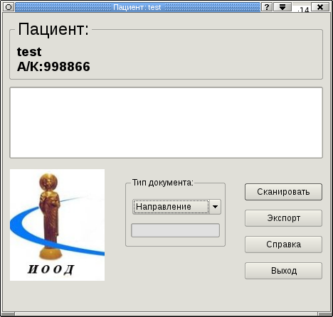
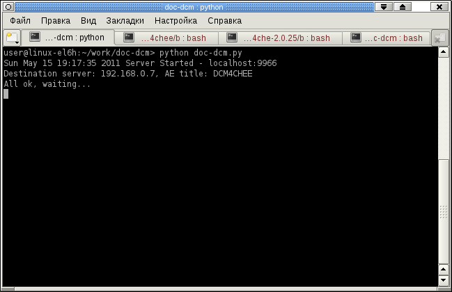

О программе
Сервисная программа doc-dcm предназначена для сканирования бумажных документов (например, направлений) и дальнейшего размещения их на Dicom-серверах ИООД, а также занесения информации о сканировании документов в ЦИС.
Главное окно программы
Главное окно программы содержит все основные элементы управления — кнопку сканирования, кнопку загрузки сканированных изображений на сервер, окно просмотра протокола, список типа документов, информацию о пациенте, окно предпросмотра и кнопку закрытия окна.

Рис. 1. Главное окно программы.
Кнопка «Сканировать» позволяет провести сканирование документа. (одного или нескольких)
Кнопка «Экспорт» загружает сканированный документ на сервер.
Кнопка «Выход» закрывает окно программы.
Кнопка «Справка» выводит окно справочной информации о программе.
Информационное поле «Пациент» служит для отображения ФИО и номера амбулаторной карты пациента.
Список «Тип документа» служит для выбора типа документа — по умолчанию тип ставится как «Направление»
Работа с программой
Запустите программу (ярлык запуска находится: «пуск»-«утилиты»-«doc-dcm». Дождитесь появления окна вида:

После появления надписи All ok, waiting, программа готова к работе. Перейдите в окно браузера, войдите в ЦИС, найдите нужного пациента, нажмите ссылку «dicom». Появится главное окно программы. Положите документ в сканер, закройте крышку сканера и нажмите кнопку «Сканировать». Дождитесь появления сканированного изображения в окне предпросмотра. Если необходимо сканировать еще один или несколько листов, дождитесь готовности сканера, разместите следующий документ в сканере и нажмите кнопку «Сканировать». Если какой-либо документ не нужно сохранять на сервере, уберите значек «Х», находящийся слева от документа в списке сканированных документов.
Далее для сохранения документов необходимо нажать кнопку «Экспорт». Документы будут сохранены на сервере, о чем будет свидетельствовать изменение цвета фона в списке документов с белого на зеленый (или красный, если произошла какая-либо ошибка).
После этого необходимо закрыть окно, нажав кнопку «Выход».
Далее можно приступать к сканированию документов следующего пациента.